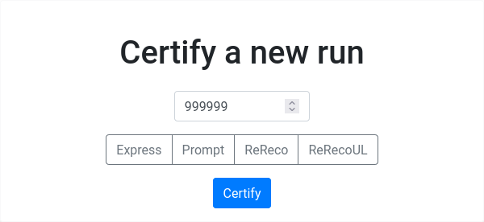

CertifyView
OOF
Possibly the most intricate part of CertHelper, which also requires a lot of refactoring. Brace yourselves.
Overview
This is a multi-purpose1 class-based view which handles the following:
- Renders a form to certify a combination of run number & reconstruction type
- Allows the user to submit a complete certification form.
Its final purpose is to guide the user in order
to create TrackerCertification objects. As a side-effect, OmsRun,
OmsFill, Dataset and RunReconstruction objects are also created.
The user can land on this page from:
-
The
/openruns/page:-
By selecting a run number and (optionally) a reconstruction type on the top form (
GETrequest). -
By clicking a colored button in the results listed after searching for openruns (bottom form,
GETrequest).
-
-
The
/certify/page:- By submitting the complete certification form (
POSTrequest)
- By submitting the complete certification form (
Inputs
- Run number (
int, from URL, required) - Reconstruction type (
str, from URL, optional) - Dataset name (
str, fromGETparameters, optional, only used when clicking on colored boxes in/openruns/)
Behavior
On class creation
This is common behavior for both GET and POST and is contained
in the
dispatch method
(the part of the view run before checking for GET or POST),
which is overridden.
- Make sure that a run number and a reconstruction type are specified.
- Make sure that current user is allowed to certify specific reconstruction.
- If certification exists and user is the owner, redirect to update it, else continue below.
- Make sure an
OmsRunandOmsFillobject exists for specific run number. - Run
GETorPOST-specific logic (below).
This procedure could raise:
RunReconstructionAllDatasetsCertifiedif no uncertified datasets are found for this run number in RunRegistry. This redirects back to the/openruns/page, so that the user can choose another run number.ConnectionErrorif RunRegistry is not accessible, andParseErrorif there's some CERN SSO outage (see issue #136). This is pretty much equivalent withConnectionError. In this case, the user is not allowed to proceed, since there is not enough information. A reconstruction type should be also supplied.RunRegistryReconstructionNotFound,RunRegistryNoAvailableDatasetsif no info was found on RunRegistry for this specific reconstruction or dataset.OmsApiRunNumberNotFound,OmsApiFillNumberNotFoundif no info was found on OMS API for this run or fill number.
Ok this may be stupid
...as this behavior is not probably needed for both GET and POST.
TO BE REFACTORED AT SOME POINT
GET
- Create a form for the user to certify the reconstruction. This
form also contains information about whether there was complete information
from RunRegistry and OMS API at the time (
external_info_complete).
flowchart LR
get(GET request) --> get_rr[Get info from RR]
get_rr --> info_rr{Info available?}
info_rr -- "Yes" --> get_oms[Get info from OMS API]
get_oms --> info_oms{Info available?}
info_oms -- "Yes" --> ext_info_true[External Info Complete]
info_oms -- "No" --> ext_info_false[External Info Incomplete]
info_rr -- "No" --> ext_info_false
ext_info_true --> render[Render form]
ext_info_false --> renderInfo
external_info_complete is updated and set as an attribute to the rendered
form so that this information is available upon POSTing the form back and a
TrackerCertification instance is created, where the external_info_complete
is stored.
POST
- Get or create a
RunReconstructionobject given the run number and the reconstruction type. - If the dataset is specified (e.g.
/Express/Commissioning2022/DQM),get_or_createaDatasetobject. - Parse the
POSTed form. - Check whether a
TrackerCertificationobject exists for this combination of parameters, else create it. -
If
external_info_completeisFalsein thePOSTdata (see below):-
Check if
OmsFillexists with the info supplied, and create or update it with the info in the form. If object already exists, update it:omsfill_form = OmsFillForm( request.POST, instance=OmsFill.objects.get( fill_number=omsfill_form.data["fill_number"] ), ) -
Since the
OmsRunobject has already been created before, even without RR/OMS information, update the appropriateOmsRuninstance with the info supplied manually by the user with the form:Whereomsrun_form = OmsRunForm(request.POST, instance=self.run)self.runis theOmsRuninstance created before.
-
TRIGGER WARNING; NOT DRY
This last step of the procedure has been  COPIED-PASTED to the
COPIED-PASTED to the
UpdateRunView
in the listruns app until a cleaner solution has been found.
Special cases
Only a run number is supplied
This case is valid if the user navigates to /openruns/ and
only specifies a run number before pressing Certify:

The procedure is as follows:
- Query the RunRegistry using the supplied run number
to get the next available uncertified dataset
(e.g.
/Express/Commissioning2022/DQM). This is done using therr_retrieve_next_uncertified_datasetfunction. - Then, to specify the reconstruction type, using the dataset
name acquired in the previous step, the
get_reco_from_datasetfunction is run (which simply searches for specific keywords in the dataset string, e.g. in the previous example, the reconstruction type would beexpress).
A combination of run_number and reconstruction type is specified
Steps specific to this case:
- The dataset is retrieved from RunRegistry using the run number and the
reconstruction type specified (
rr_retrieve_dataset_by_reco).
The same exceptions raised above apply.
A dataset is specified but not a reconstruction type
This case applies when the user clicks any of the dataset buttons on
the /openruns/ page, in the table generated when searching for
open runs.
Requested OmsRun and/or RunRegistry information is not available
This can be caused either by:
- CertHelper not having access to RunRegistry or OMS API or
- Run number/run reconstruction was not found in RunRegistry or OMS API.
Input fields are presented to the user instead of a display, so that they can
edit the missing OmsRun and OmsFill information manually. This is achieved by
providing two more forms to the certify.html template:
OmsRunForm(omsrun_form)OmsFillForm(omsfill_form)
Those fields are activated only if the external_info_complete attribute
of the certification form is set to False2. For example, for the
run_type field of OmsRun:
{% if not form.external_info_complete.value %}
{% render_field omsrun_form.run_type class+="form-control form-select" title=omsrun_form.run_type.help_text %}
{% else %}
{{ run.run_type|capfirst }}
{% endif %}
This was done for every field that needed to be editable by the user, no smarter way was found to do that.
On Submit button press, a POST request is made (reminder that this also runs
the dispatch method).
Certification already exists
- Check if the user trying to certify this reconstruction is the same as the one who initially created it OR has shift leader rights
- Redirect to
UpdateRunViewoflistruns.